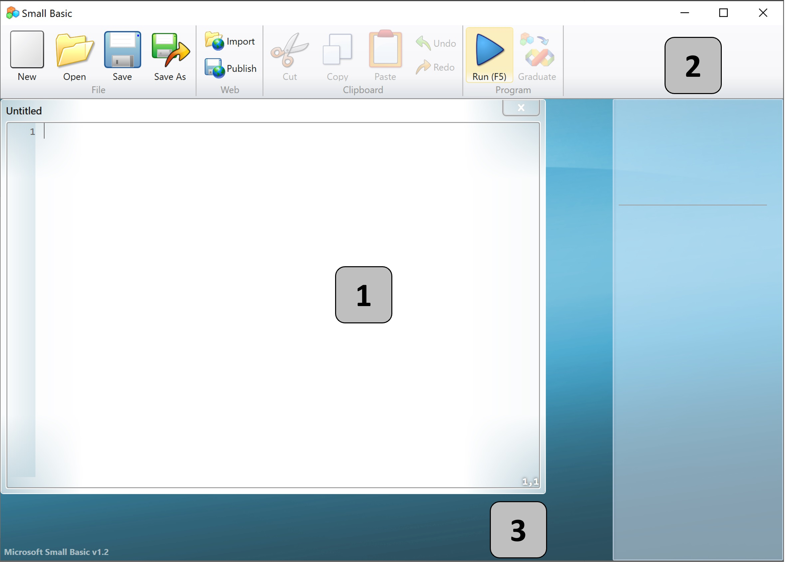
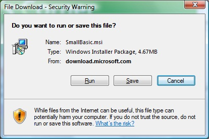
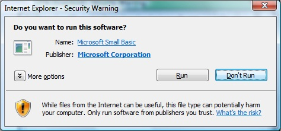
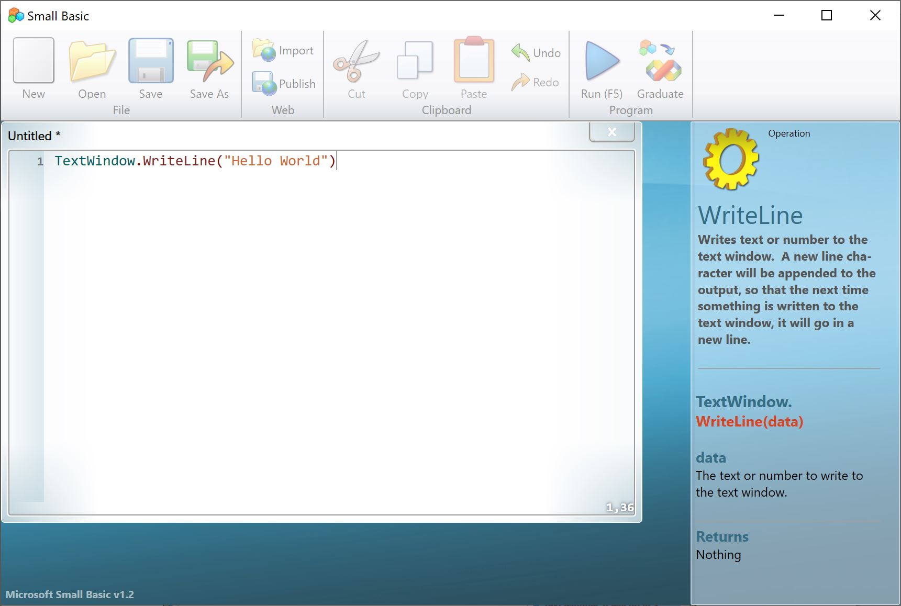
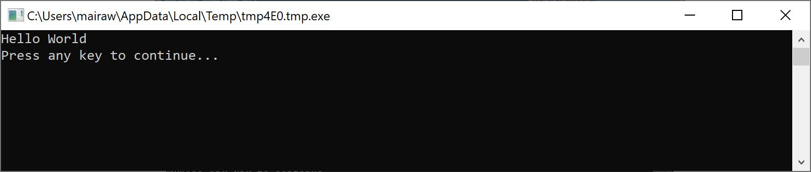
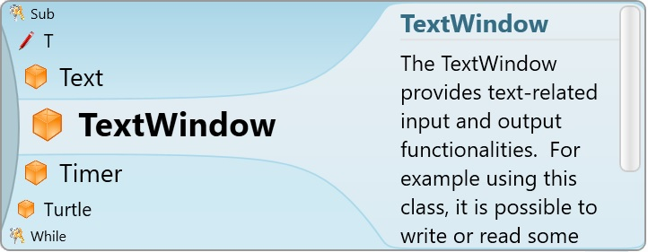

<div class="container mrg-top20 sb-main-container">
  <div class="col-xs-9 sb-main-cont-left">
    <h2 id="top">An Introduction</h2>

    <h3><a name="Small_basic_intro"></a>Small Basic and Programming</h3>
    <p>
      Computer Programming is defined as the process of creating computer
      software using programming languages. Just like we speak and understand
      English or Spanish or French, computers can understand programs written in
      certain languages. These are called programming languages. In the
      beginning there were just a few programming languages and they were really
      easy to learn and comprehend. But as computers and software became more
      and more sophisticated, programming languages evolved fast, gathering more
      complex concepts along the way. As a result most modern programming
      languages and their concepts are pretty challenging to grasp by a
      beginner. This fact has started discouraging people from learning or
      attempting computer programming.
    </p>
    <p>
      Small Basic is a programming language that is designed to make programming
      extremely easy, approachable and fun for beginners. Small Basic’s
      intention is to bring down the barrier and serve as a stepping stone to
      the amazing world of computer programming.
    </p>
    <h3><a name="Small_basic_environment"></a>The Small Basic Environment</h3>
    <p>
      Let us start with a quick introduction to the Small Basic Environment.
      When you first launch SmallBasic, you will see a window that looks like
      the following figure.
    </p>
    <p style="text-align: center;">
      
    </p>
    <p style="text-align: center;">
      <strong>Figure 1.1 - The Small Basic Environment</strong>
    </p>
    <p>
      This is the Small Basic Environment, where we’ll write and run our Small
      Basic programs. This environment has several distinct elements which are
      identified by numbers.
    </p>
    <p>
      The <b>Editor</b>, identified by [1] is where we will write our Small
      Basic programs. When you open a sample program or a previously saved
      program, it will show up on this editor. You can then modify it and save
      if for later use.
    </p>
    <p>
      You can also open and work with more than one program at one time. Each
      program you are working with will be displayed in a separate editor. The
      editor that contains the program you are currently working with is called
      the <i>active editor</i>.
    </p>
    <p>
      The <b>Toolbar</b>, identified by [2] is used to issue commands either to
      the active editor or the environment. We’ll learn about the various
      commands in the toolbar as we go.
    </p>
    <p>
      The <b>Surface</b>, identified by [3] is the place where all the editor
      windows go.
    </p>
    <h3><a name="Install_small_basic"></a>Install Small Basic</h3>
    <p>
      To install Small Basic, you must be running Windows Vista, 7, 8, 8.1 or
      10. If you are on Windows Vista or Windows 7, please install Microsoft
      .NET Framework 4.5 first.
    </p>

    <p>
      <a
        href="https://www.microsoft.com/en-us/download/confirmation.aspx?id=30653"
        >Click here to install Microsoft .NET Framework 4.5</a
      >
    </p>
    <p>Next click here to download Small Basic</p>
    <div style="text-align:left; padding-bottom:10px">
      <a
        href="../../../../assets/SmallBasic_v1.2.msi"
        type="button"
        title="Download Small Basic"
        class="btn btn-primary download-sb"
      >
        Download</a
      >
    </div>
    <p>This window will appear:</p>
    
    <p>
      Click <b>Run</b> to begin the download. Afterwards, you'll see a similar
      window:
    </p>
    <br />
    Then click <b>Run</b>
    again to open the Setup Wizard.
    <p>
      Click <b>Next</b> to start the installation process. Accept the licensing
      agreement. Then, for each screen afterwards, you can accept the default
      choice by clicking <b>Next.</b> When done, you should see the Installation
      Complete screen. Click <b>Close.</b>
    </p>
    <h3><a name="Our_first_program"></a>Our First Program</h3>
    <p>
      Now that you are familiar with the Small Basic Environment, we will go
      ahead and start programming in it. Like we just noted above, the editor is
      the place where we write our programs. So let’s go ahead and type the
      following line in the editor.
    </p>
    <div class="CodeHighlighter">
      <pre><code class="visual basic">TextWindow.WriteLine("Hello World")</code></pre>
    </div>
    <p>
      This is our first Small Basic program. And if you have typed it correctly,
      you should see something similar to the figure below.
    </p>
    <p style="text-align: center;">
      
    </p>
    <p style="text-align: center;">
      <strong>Figure 1.2 - First Program</strong>
    </p>
    <p>
      Now that we have typed our new program, let’s go ahead and run it to see
      what happens. We can run our program either by clicking on the Run button
      on the toolbar or by using the shortcut key, F5 on the keyboard. If
      everything goes well, our program should run with the result as shown
      below.
    </p>

    <p style="text-align: center;">
      
    </p>
    <p style="text-align: center;">
      <strong>Figure 1.3 - First Program Output</strong>
    </p>
    <p>
      Congratulations! You have just written and run the first Small Basic
      program. A very small and simple program, but nevertheless a big step
      towards becoming a real computer programmer! Now, there’s just one more
      detail to cover before we go on to create bigger programs. We have to
      understand what just happened – what exactly did we tell the computer and
      how did the computer know what to do? In the next chapter, we’ll analyze
      the program we just wrote, so we can gain that understanding.
    </p>
    <p>
      <strong>Note</strong>: As you typed your first program, you might have
      noticed that a popup appeared with a list of items (Figure 1.4). This is
      called “intellisense” and it helps you type your program faster. You can
      traverse that list by pressing the Up/Down arrow keys, and when you find
      something you want, you can hit the Enter key to insert the selected item
      in your program.
    </p>
    <p style="text-align: center;">
      
    </p>
    <p style="text-align: center;">
      <strong>Figure 1.4 - Intellisense</strong>
    </p>
    <h3><a name="Saving_our_program"></a>Saving our program</h3>
    <p>
      If you want to close Small Basic and come back later to work on the
      program you just typed, you can save the program. It is in fact a good
      practice to save programs from time to time, so that you don’t lose
      information in the event of an accidental shutdown or a power failure. You
      can save the current program by either clicking on the “save” icon on the
      toolbar or by using the shortcut “Ctrl&#43;S” (press the S key while
      holding down the Ctrl key).<br />
      &nbsp;
    </p>
    <h3><a name="Additional_resources"></a>Additional Resources</h3>
    <p>
      To learn more, click
      <a
        href="https://social.technet.microsoft.com/wiki/contents/articles/16299.small-basic-curriculum.aspx"
        >here</a
      >
      to see the full Curriculum or check out the Tutorials page below
    </p>
    <div>
      <a style="float:left;" routerLink="../" title="Tutorials">Tutorials</a>
      <a
        [routerLink]="['/tutorials/chapter2']"
        fragment="top"
        style="float:right;"
        title="Next Chapter"
        >Next Chapter: Understanding Our First Program</a
      >
    </div>
  </div>
  <!-- This is to be replaced with TOC in left margin -->
  <!--
  <div class="col-xs-3 sb-main-cont-right">
    <div class="well sb-quickLinks">
      <h3>Quick Links</h3>
      <ul class="sb-quickLinks-list1">
        <li>
          <a href="#Small_basic_intro" title="Small Basic and Programming"
            >Small Basic and Programming</a
          >
        </li>
        <li>
            >The Small Basic Environment</a
          >
        </li>
        <li>
          <a href="#Install_small_basic" title="Install Small Basic"
            >Install Small Basic</a
          >
        </li>
        <li>
          <a href="#Our_first_program" title="Our First Program"
            >Our First Program</a
          >
        </li>
        <li>
          <a href="#Saving_our_program" title="Saving Our Program"
            >Saving Our Program</a
          >
        </li>
        <li>
          <a href="#Additional_resources" title="Additional Resources"
            >Additional Resources</a
          >
        </li>
      </ul>
    </div>
  </div>
--></div>
